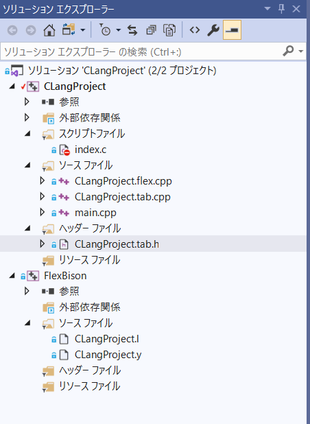

10 + 3 10 * 3
#include <stdio.h>
#include <stdlib.h>
#include <iostream>
#include <fstream>
#include <vector>
#include <string>
using namespace std;
class InputParser {
vector <string> tokens;
public:
InputParser(int& argc, char** argv) {
for (int i = 1; i < argc; ++i) {
tokens.push_back(string(argv[i]));
}
}
const string& getCmdOption(const string& option) const {
vector<string>::const_iterator itr;
itr = find(tokens.begin(), tokens.end(), option);
if (itr != tokens.end() && ++itr != tokens.end()) {
return *itr;
}
static const string empty_string("");
return empty_string;
}
bool cmdOptionExists(const string& option) const {
return find(tokens.begin(), tokens.end(), option)
!= tokens.end();
}
};
int main(int argc, char** argv) {
InputParser input(argc, argv);
const string& filename = input.getCmdOption("-f");
if (filename.empty()) {
cerr << "ファイルを指定してください" << endl;
return 1;
}
extern int yyparse(void);
extern FILE* yyin;
if ((yyin = fopen(filename.c_str(), "r")) == NULL) {
cerr << "ファイル読み込みに失敗しました" << std::endl;
return 1;
}
if (yyparse()) {
cout << "プログラム終了" << endl;
}
return 0;
}
-f index.c
>>13.000000 >>30.000000 ...\CLangProject\Debug\CLangProject.exe (プロセス 10480) は、コード 0 で終了しました。 このウィンドウを閉じるには、任意のキーを押してください...

図130101